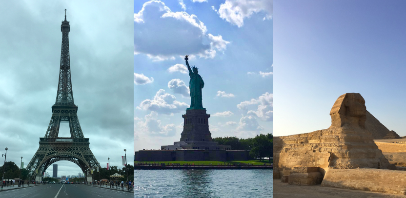
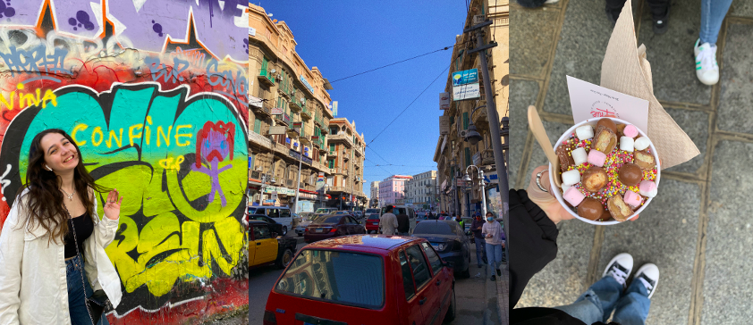

About me:
My name is Lara Farid, I am currently a Student at Essec Business School in Paris. Always looking for new adventures and to discover new things! I love traveling, going out with friends, fashion, photography, video-making, and journaling✨
Check out where I am studying!
Coming from a culturaly diversified background, I love discovering new countries and cultures! I went to many countries in Europe such as Spain, the UK, Italy, Greece; but also in the Middle-East (Egypt, the UAE...), or even in Latin America. I love trying out new foods, new activities, and seeing new landscapes! 
I love taking pictures of everything that is around me all the time! Anywhere I go, you'll always find me with my phone taking pictures of the landscapes, of the people around me, or the food i eat 😋 I post most of my pictures on Instagram. Click here to find my Instagram and the pictures that I post! 
I enjoy making videos of any particular event or whenever I am doing something that I want to be reminded of when I grow up. Whenever I am traveling, going out with my friends and having fun, or even in my daily life. I love filming short sequences of what I do and creating short videos. I use an app called "1 Second Everyday" to film one second of my life everyday; it is basically a video diary that will allow me to have one long video at the end of the year with 1 second of every single day of 2021. Click here to download the application on the AppStore or here to get it on Google Play.
Follow me :)